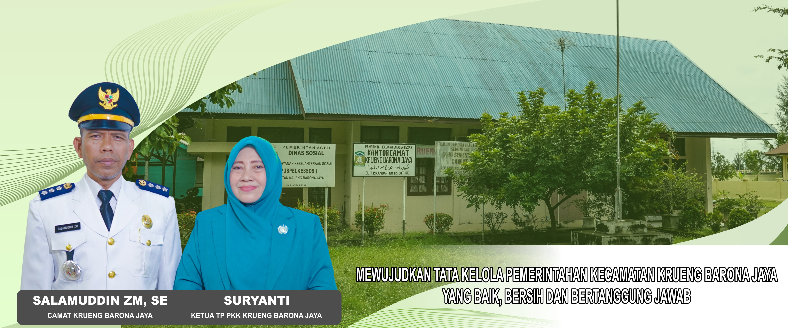

Website ini dimaksudkan sebagai sarana publikasi untuk memberikan Informasi dan gambaran tentang potensi Kecamatan Krueng Barona Jaya Kabupaten Aceh Besar serta meningkatkan pelayanan kepada masyarakat untuk mengakses informasi. Melalui keberadaan website ini kiranya masyarakat dapat mengetahui seluruh informasi tentang kebijakan Pemerintah Kabupaten Aceh Besar, khususnya Kecamatan Krueng Barona Jaya.
Kritik dan saran juga sangat Kami harapkan demi penyempurnaan website ini dimasa datang. Semoga keberadaan website ini memberikan manfaat bagi kita semua. Amin...
“Mewujudkan Tata Kelola Pemerintahan Kecamatan Krueng Barona Jaya Yang Baik, Bersih Dan Bertanggung Jawab.”
MISI KECAMATAN KRUENG BARONA JAYA :Meningkatkan kualitas sumber daya aparatur pemerintahan kecamatan yang berdedikasi tinggi, berdisplin, bertanggung jawab, dan berpendidikan. Menyediakan sarana dan prasarana untuk mendukung terciptanya pemerintahan yang baik dan beribawa.